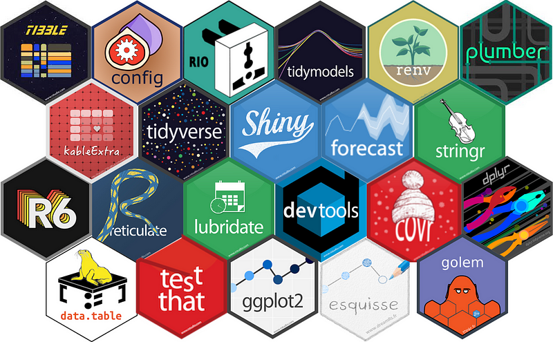

R is a very common language in statistics. However, in recent years many new tools have widened R’s reach and appeal. With R you can now produce REST API, interactive dashboards, and more. If you need to do something with R, it is almost guaranteed that there is an extension, known as package, for that. CRAN, the official R repository, has over 18,000 packages. Several more can be obtained from sources like GitHub.
In this article I want to give you a selection of packages I’ve used in my career that are essential to R developers. Because R has many use cases, I do not expect this list to be a complete one. I can only list packages that I have used in my personal or professional life. Your mileage might vary. However, I have worked in several different industries and projects, therefore I hope this list can be useful to many R users.
Note that I have not listed the extremely obvious packages we all know already: dplyr (tabular data manipulation), ggplot2 (make plots), testthat (unit testing), roxygen2 (documentation), and others.
Here comes the long list!
Tabular data manipulation
data.table. The main function here is melt, used to reshape data frames.
tibble. tibbles are an evolution of data frames. When I started using them, I hated them. They throw errors constantly. But later I realized that this is on purpose. Tibbles will force you to be more explicit with your code, as they make a lot fewer assumptions than data frames. This is a good thing. Explicit code is more understandable.
Plotting
esquisse. This library doubles as an RStudio add-on. esquisse allows you to interactively build a ggplot from a data frame. Once you are done, it will export the code generating the plot to an R file. This is very helpful when you are learning ggplot, or if like me you never remember the exact syntax of aes()…
plotly. This library can also make good looking plots. Its main advantage over ggplot2 is that it produces interactive plots. If you build dashboards in dash, rather than Shiny, you want to use plotly. plotly can also transform your ggplot chart into an interactive plot.
String manipulation
stringr. It is unlikely you will need anything but stringr to manipulate strings. Find, replace, split, replace. Whatever you need, stringr has you covered. It even handles regex expressions.
Date manipulation
lubridate. Manipulating dates and timestamps is painful with any programming language. lubridate is the best option I found, and it is a very good one.
Machine learning
For many machine learning tasks, particularly advanced techniques such as deep learning, I would pick Python over R. However, R is perfectly capable to support machine learning workflows. In this context, the choice is between caret and tidymodels. You can find an excellent article comparing the two here. In essence, tidymodels is a “newer” version of caret. They were even developed by the same author. At the beginning of my career I was using caret. These days I tend to prefer tidymodels as it comes with some extra features built-in.
A bonus library if you need to worry about deployments is vetiver. Follow this blog to know more about this library.
Dashboards
Shiny. The most popular framework to build interactive apps in R.
dash. This framework is rising in popularity thanks to its compatibility with other languages like Python. The full version of dash is behind a paywall. Personally, I prefer Shiny, but this is subjective. dash is a perfectly valid option, and it might be even easier to learn if you come from Python.
Shiny tools
golem. Golem is a framework to create structured Shiny apps. Golem will create a package-like structure. It will also handle creating modules and other infrastructure.
bslib. A flexible package to customize the look and feel of Shiny. It integrates bootstrap customization with Shiny.
shinytest. Testing Shiny server logic has never been easy. Shinytest simplify the testing process. It is not ideal, but it way better than no testing at all.
shinyloadtest. This package allows to run loa testing directly within R, without having to rely on external tools. As for shinytest, it is not perfect, but, the interactive report it produces at the end is very informative.
REST API
plumber. This is the framework to build REST API in R. It is not as powerful as Python’s or Javascript’s counterparts, but it is adequate.
Image/video analysis
If I could choose, I would not pick R for image analysis. But if I have too, it is not an impossible task. Here are my preferred options.
imageMagik. Good package for image manipulation.
imager. Designed for image and video analysis.
opencv. OpenCV needs no introduction to people dealing with images. The R implementation is not as strong or well documented as the Python one, but it is solid option.
Others
This section contains packages normally used by developers. But be fooled: in reality, this are packages that every R user should know! I will explicitly list packages instance testthat or roxygen that should be well known already.
covr. Verify unit test coverage: how much of your code is tested? Remember: “Code that has not been tested is code that does not work”.
lintr and styler. Two styling packages that can be used as RStudio add-ons.
log4r. Create logs for your R code. Iy allows you save to file specific events, and you can even specify the format of the log entries.
renv. A virtual environment manager. If you want your code to be used more than once and/or by more than one person, you must use renv to formally record all your dependencies.
config. The best possible way to handle global variables. Particularly useful when you have to deal with different environments: dev, test, staging, prod, etc.
reticulate and rjava. Integrate Python and Java code with your R code.
here. Specify paths relative to the project root folder. Also, it removes the need to use symbols like “/” or “” that are specific to the operating system.
pool. A database utility to manage connection and improve database performance.
proofvis. A profiling tool. Use it on your code to identify bottlenecks. When you use it within RStudio it produces an interactive report to show you the time spent in different parts of the code. Clicking on the report chart will bring you directly to the code so you can start to modify it right away.
parallel. A package to enable parallel computing.. Useful when you have lengthy calculations that could run in different threads, for instance when you want to run multiple simulations.
Metapackages
Metapackages are packages including several other packages. I tend to not use metapackages. I prefer to install only the packages that I actually need. That said, there is nothing wrong with metapackages, and in fact I do recommend them to beginners. The two main metapackages are the usual suspects tidyverse and tidymodels.
tidyverse. A curated collection of packages designed for data science.
tidymodels. This is the machine learning oriented version of tidyverse. It includes packages to handle machine learning pipelines: datasets splitting, features manipulation, model definition, etc.
Bonus! Base R functions
As you might expect, there are several base R functions you will use. Functions like c, list, sum, and many more. But if I have to pick one function to recommend, or rather a family of functions, that would be the apply family: mapply, tapply, lapply. I do not recommend sapply because it can produce different outputs for different inputs without throwing errors or warnings. In other words, it allows you to be non-explicit. As we saw earlier with tibble, we want to be explicit.
Anything missing?
The main package I have not been able to find so far is a statsD client implementation for R. GitHub has two projects attempting to create one, but it looks like they are not under development anymore.
Wrap up
R is quite flexible. Yes, it is not as multi-purpose as Python, but it can do many things, some even well… How well R does depends a lot on the developer. I covered in the past how you should set up your project. In this article I went over some tools you can add to that set up to speed up and improve your workflow.
The list above also serve as a roadmap: I will be publishing articles on many of mentioned packages. Follow me to make sure you don’t miss any deep dive!
Let me know: What packages would you recommend?